É aqui que separam os meninos dos homens. Logo no comecinho de Dark Souls III, o jogo já te joga na cara o Iudex Gundyr, o chefe-tutorial que, de “tutorial”, só tem o nome.
Ele não tá de brincadeira: é grandão, bate pesado e já mostra como vai ser o ritmo do jogo — errar esquiva aqui custa caro.
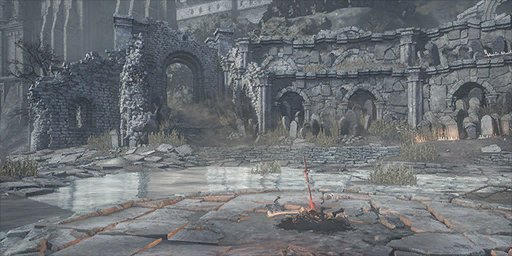
Localização
Você encontra o Gundyr lá no Cemetery of Ash, praticamente no portão de entrada do game. Pra sair dali e chegar no Firelink Shrine, tem que passar por ele.
Lore
O Gundyr era pra ser um campeão, alguém que guiaria o acendimento da chama. Só que chegou atrasado pra festa e foi dominado por uma corrupção bizarra.
É por isso que, na segunda fase, ele vira praticamente um monstro cheio de gosma preta. Mais pra frente você encara a versão “campeão” dele — mas aí é outra história.
Macetes pra vencer
Primeira fase é tranquila, ataques lentos e fáceis de esquivar.
Na segunda fase ele solta a gosma preta e fica mais agressivo.
Ficar colado nele é mais seguro do que ficar distante.
Dá pra tentar vários backstabs se for paciente.
Armas rápidas funcionam melhor que pesadas.
Vordt of the Boreal Valley
Achou que tava difícil? Relaxa, agora é só encarar uma geladeira blindada com quatro patas que corre atrás de você sem freio. Vordt não tem muita finesse, é pura brutalidade e gelo na cara.
É aqui que o jogo deixa claro: "se não aprendeu a esquivar, vai aprender na marra".
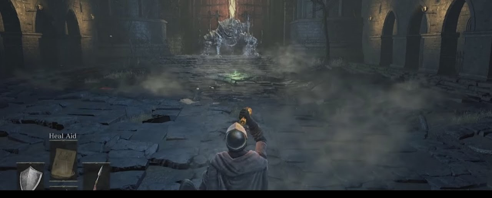
Localização
Você encontra o Vordt no fim do High Wall of Lothric, guardando o portão que leva pro Undead Settlement. Não tem como escapar dele: se quiser continuar a jornada, vai ter que encarar a fera.
Lore
O Vordt já foi um cavaleiro nobre ligado à Catedral do Abismo, mas acabou sendo corrompido pelo Pontiff Sulyvahn. Sob a influência dele, perdeu completamente a sua humanidade e foi transformado em uma fera grotesca, sem mente ou vontade própria.
Ele, junto com a Dancer of the Boreal Valley, mostra o destino cruel daqueles que juraram lealdade ao Pontífice: guerreiros poderosos que se tornaram apenas bestas de gelo a serviço de seu mestre.
Macetes pra vencer
Ficar sempre debaixo dele é a melhor opção: a maioria dos golpes passam por cima ou de lado.
Ele usa bastante investida, mas dá pra rolar pro lado que ele erra feio.
Quando ele solta o sopro de gelo, corre pra trás ou pro lado — é o momento certo pra dar umas espadadas grátis.
Na segunda fase, ele fica muito mais rápido, então paciência é chave: bate duas vezes e recua.
Escudos até ajudam no começo, mas o ideal é esquivar pra não ficar preso.
Crystal Sage
Crystal Sage é o primeiro chefe que realmente testa tua paciência mais do que tua força bruta. Enquanto Gundyr e Vordt eram porradaria direta, aqui o jogo muda o ritmo: é hora de lidar com magia e teleporte.
É aquele chefe que te faz pensar: “ah, beleza, é só um maguinho frágil”… até ele começar a sumir e encher a tela de feitiços azuis voando na tua direção.
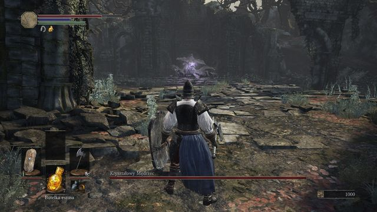
Localização
Você encontra o Crystal Sage na Road of Sacrifices, mais especificamente no final da região que leva direto pra Cathedral of the Deep.
Ele fica num pátio aberto, depois de atravessar várias áreas cheias de corvos-humanos e cavaleiros corrompidos.
Derrotar o Sábio é obrigatório porque só assim você desbloqueia o caminho pra Catedral — sem passar por ele, não tem como avançar na história principal.
Lore
O Crystal Sage era um feiticeiro que dominava a arte da magia de cristal, técnica desenvolvida por Big Hat Logan lá em Dark Souls 1. Esse poder acabou sendo passado adiante e corrompido ao longo do tempo, e o Sábio que encontramos já não é só um estudioso: virou praticamente um servo da loucura arcana.
Ele tem ligação direta com os Deacons da Catedral do Abismo, já que ajudou a fortalecer o exército de Aldrich com suas artes mágicas. Por isso, ele aparece como um “porteiro” antes da Catedral, testando qualquer um que ouse atravessar o território controlado pelo culto.
Macetes pra vencer
No começo da luta, ele fica sozinho: corre direto pra ele e bate rápido, porque o mago é molenga no corpo a corpo.
Depois de perder vida, ele começa a se multiplicar — mas só um é o verdadeiro. Os clones somem em poucos golpes, já o real brilha com feitiços mais fortes.
Sempre que ele teleportar, fica de olho na fumaça azul no chão: é a dica de onde vai aparecer.
Não dá mole de ficar no meio da arena quando ele e os clones começam a disparar feitiços juntos, a tela vira um bullet hell.
Armas rápidas e pressão constante são a chave. Se você deixar espaço, ele some e só complica.
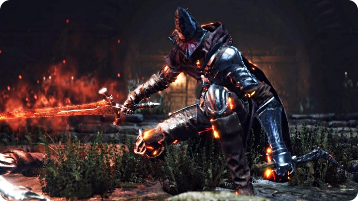
Abyss Watchers
Se até agora os chefes eram grandalhões ou magos apelões, aqui é onde Dark Souls 3 mostra que também sabe brilhar em lutas de estilo puro.
Os Abyss Watchers não são monstros, e sim guerreiros humanos, rápidos e agressivos, que partem pra cima como se estivessem em um duelo real.
É uma batalha que parece uma dança de espadas: esquivas rápidas, combos insanos e velocidade que pega de surpresa quem estava acostumado com os chefões gigantes.
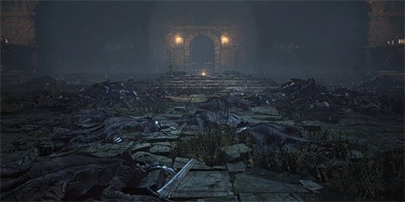
Localização
Os Abyss Watchers ficam em Farron Keep, a famosa área pantanosa onde o jogador precisa apagar três chamas gigantes espalhadas pelo pântano.
Só depois de apagar todas é que o portão para a arena deles se abre. A luta acontece numa sala enorme, cheia de cadáveres de guerreiros caídos — todos antigos membros da legião que, em algum momento, enlouqueceram na luta contra o Abismo.
Lore
Os Abyss Watchers fazem parte da Undead Legion of Farron, um grupo de guerreiros que herdou a vontade de Artorias, o Lobo do Abismo, lá de Dark Souls 1.
A missão deles era caçar e destruir qualquer coisa tocada pelo Abismo — mas essa devoção acabou se tornando a própria maldição.
Conectados por um laço estranho, todos compartilhavam da mesma alma e da mesma loucura: lutar entre si sem parar, como se estivessem eternamente presos em um duelo sem vencedor.
Macetes pra vencer
Na primeira fase, não são só você e um Watcher: aparecem outros legionários que também atacam entre si. Use isso a seu favor e deixe eles se matarem enquanto você aproveita as brechas.
O Watcher principal é o que tem a barra de vida vinculada — foque nele, mas não ignore os outros porque eles atrapalham bastante.
Rolar para o lado é mais seguro do que pra trás, já que eles têm combos longos e podem te alcançar rápido.
Na segunda fase, o chefe incorpora as chamas do Abismo: os golpes ficam muito mais rápidos e com alcance de fogo. Aqui a paciência é fundamental — bata uma ou duas vezes e recue.
Escudos não ajudam muito, o ideal é aprender o ritmo das espadadas e esquivar.
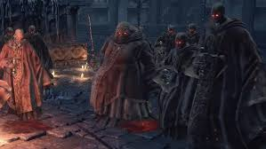
Deacons of the Deep
Os Deacons of the Deep são um grupo de clérigos corrompidos, corajosos mas cheios de magia negra, que servem como um desafio coletivo.
O verdadeiro alvo é o “chefe” escondido entre eles, e a luta exige atenção e estratégia para separar o líder dos demais.
Ao derrotá-los, você recebe a boneca necessária para avançar para o Vale Boreal.
Localização
Você encontra os Deacons of the Deep na Cathedral of the Deep, uma área repleta de corredores estreitos e escadarias.
O acesso se dá após passar pelo High Wall of Lothric e seguir pela região do Undead Settlement, subindo pelas escadas e atravessando o grande salão da catedral até a plataforma principal, onde eles se reúnem para seu ritual sombrio.
Fique atento: há inimigos menores ao redor que podem atrapalhar antes da luta começar.
Lore
Esses clérigos eram devotos da fé local, mas foram corrompidos pela influência de Aldrich.
Seus rituais malignos transformaram a catedral em um lugar de trevas e feitiços, e os Deacons agora servem como guardiões do poder do culto, prontos para atacar qualquer intruso.
Macetes pra vencer
Concentre-se em atacar o chefe principal escondido entre os Deacons, não tente matar todos de uma vez.
Use feitiços ou ataques de área para separar os inimigos menores.
Observe os padrões de magia, principalmente as invocações que eles lançam.
Mantenha-se em movimento: áreas estreitas da catedral podem deixar você encurralado.
Bloqueie ou role com precisão: ataques mágicos podem causar alto dano se não forem evitados.
High Lord Wolnir
High Lord Wolnir é encontrado nas Catacombs of Carthus, logo após atravessar o desfiladeiro cheio de esqueletos e armadilhas. Ao chegar na arena, você encontra o trono dele cercado por ossos gigantes e correntes douradas. Ele é praticamente o guardião do tesouro sombrio dessa área.
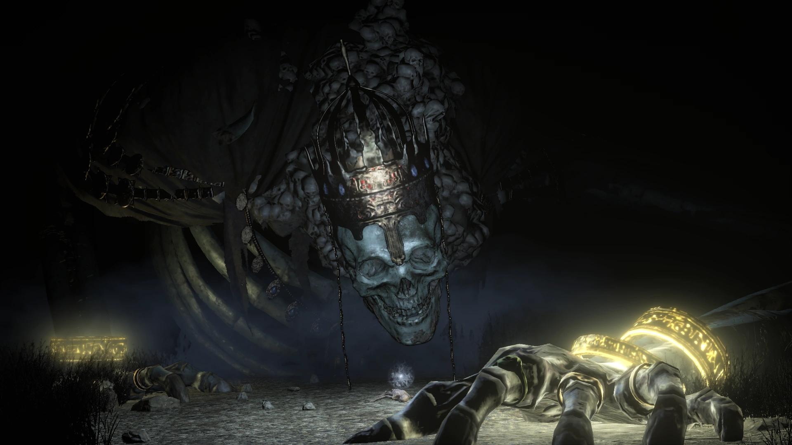
Localização
A arena está no fim das Catacombs of Carthus. Cuidado com os esqueletos e armadilhas no caminho; ao entrar, você se depara com Wolnir e seu trono cercado de ossos gigantes.
Lore
Wolnir foi um dos Lordes dos Anéis de Luz que sucumbiu à ganância e ao poder da escuridão. Ele perdeu sua humanidade, tornando-se um esqueleto gigante enlouquecido, segurando armas e correntes, símbolo de seu domínio sobre a morte. A arena cheia de ossos reflete sua corrupção e decadência.
Macetes pra vencer
O ponto fraco é o bracelete dourado em seus pulsos; ataque-os primeiro.
Evite ficar próximo dos ossos espalhados, pois podem esmagar você.
Ataques de longo alcance ajudam, mas cuidado com ondas de veneno e golpes de alcance.
Quando levantar os braços, role para os lados ou para trás para evitar ataques devastadores.
Seja paciente: ataque apenas quando ele estiver vulnerável para não morrer rápido.
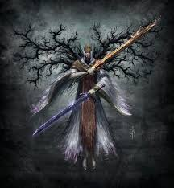
Pontiff Sulyvahn
Pontiff Sulyvahn é o mestre do Irithyll de Boreal Valley, um dos chefes mais cruéis e rápidos do jogo. Ele combina ataques físicos com magia, desafiando o jogador a dominar esquivas precisas e controlar o ritmo da luta.
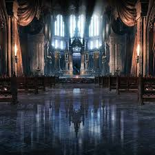
Localização
Você encontra Sulyvahn em Irithyll de Boreal Valley, no final da área principal da cidade. Para chegar até ele, é necessário atravessar a cidade tomada por guardas e monstros de gelo, chegando até a ponte que leva à arena.
Lore
Sulyvahn é um poderoso mago e guerreiro que se corrompeu pelo desejo de poder e pelo Abismo. Ele controla Irithyll com punho de ferro, transformando cidadãos em monstros e guerreiros leais. Sua crueldade e inteligência tornam a batalha memorável, e ele representa a decadência do Pontificado.
Macetes pra vencer
Ele é muito rápido, então esquiva constante é essencial.
Evite lutar perto da ponte, pois você pode ser derrubado.
Na segunda fase, ele invoca uma cópia com espada de fogo — foque em um de cada vez.
Armas rápidas ajudam a quebrar ataques antes que ele complete combos longos.
Use magias ou projéteis quando ele se afastar para criar oportunidades de ataque.
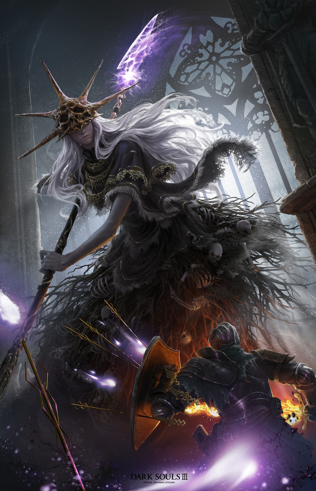
Aldrich, Devorador de Deuses
Aldrich é um dos Senhores das Cinzas, um ser deformado e faminto que devorou tanto poder quanto carne humana. Antes um clérigo devoto, ele acabou se transformando em uma monstruosidade que consome tudo o que encontra — até mesmo deuses.
Localização
Você encontra Aldrich na Catedral do Abismo. O acesso à arena se dá após derrotar os Deacons of the Deep e atravessar a área final do Undead Settlement.
Lore
Aldrich foi um clérigo devoto que, ao longo do tempo, se transformou em uma entidade sombria. Ele devorou tanto a carne de humanos quanto o poder de deuses, tornando-se um dos Senhores das Cinzas. Sua presença assombra a Catedral do Abismo, protegida por fiéis corrompidos.
Macetes pra vencer
Fique sempre em movimento para evitar os feitiços de área.
Observe os ataques de projeção de ácido e role para os lados.
Na segunda fase, ataques corpo a corpo ficam mais arriscados: use magias ou armas de longo alcance.
Fique atento à velocidade de ataque, pois ele alterna rápido entre projéteis e ataques físicos.
Paciencia e precisão são essenciais para não morrer rapidamente.
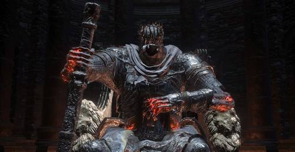
Yhorm the Giant
Yhorm é um dos Senhores das Cinzas, um gigante imponente que guarda a profecia de que protegeria a cidade de Irithyll. Ele é lento, mas cada golpe é devastador, e sua presença na arena deixa claro que força bruta aqui é tudo.
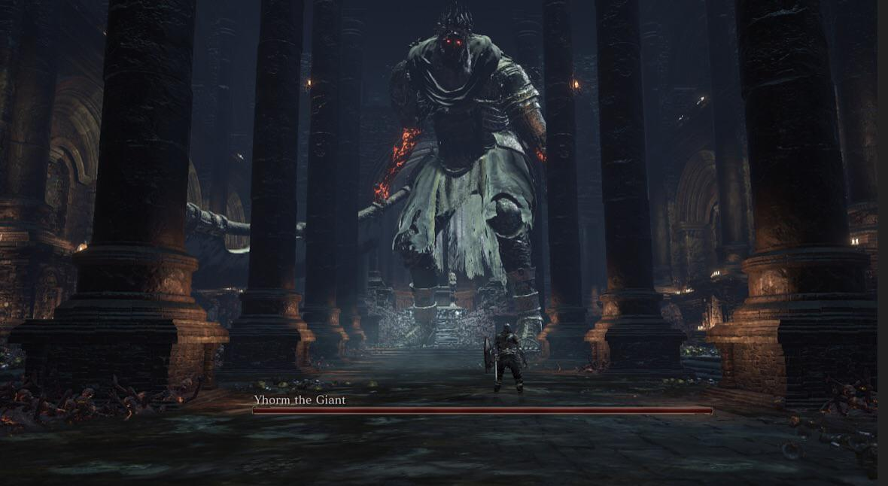
Localização
Você encontra Yhorm no Profaned Capital. Para chegar até ele, é necessário atravessar o Undead Settlement e desbloquear a passagem para a capital profanada. É um dos chefes que realmente testa paciência e estratégia.
Lore
Yhorm foi um rei que se sacrificou para proteger sua cidade, mas acabou preso pelo próprio poder da profanação. Sua espada gigantesca e sua altura colossal refletem sua grandeza e a tragédia de sua história. Ele é uma lembrança do peso que antigos heróis carregam, mesmo em decadência.
Macetes pra vencer
Ataques corpo a corpo podem ser perigosos devido ao alcance de sua espada; use distância e magias.
Observe os padrões de ataque: ele tem uma animação clara antes de cada golpe.
A Storm Ruler (espada especial encontrada na arena) é extremamente eficaz; se conseguir usá-la, o combate fica bem mais fácil.
Ficar atrás dele ou próximo das laterais durante ataques longos ajuda a evitar dano.
Paciência é chave: ataques precipitados quase sempre resultam em grandes perdas de vida.
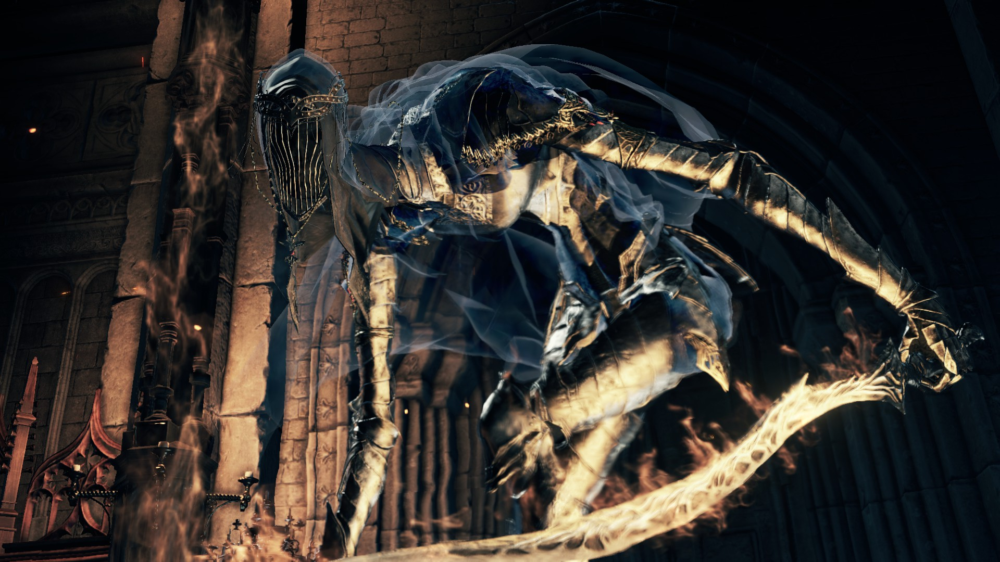
Dancer of the Boreal Valley
A Dancer é uma das batalhas mais icônicas e elegantes de Dark Souls III. Ela combina graça e brutalidade em cada movimento, transformando o combate em uma verdadeira dança mortal. Com uma arena silenciosa e uma música melancólica, esse encontro é tanto um espetáculo visual quanto um desafio tático.
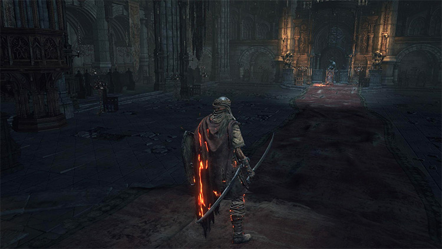
Localização
Ela é encontrada na Catedral de Lothric, no topo da escadaria após derrotar Aldrich ou Yhorm. Em certas condições, ela pode ser enfrentada antes, se o jogador matar o Emma, a High Priestess.
Lore
A Dancer era uma das Filhas do Pontífice Sulyvahn. Originalmente uma cavaleira de Irithyll, foi transformada em uma criatura retorcida e cruel pela influência do gelo profano. Condenada a servir como guardiã do caminho para o castelo de Lothric, ela dança eternamente, como se cada golpe fosse parte de uma coreografia macabra.
Macetes pra vencer
Mantenha a calma: seus movimentos são lentos, mas o tempo de reação deve ser preciso.
Durante a primeira fase, foque em esquivar para o lado esquerdo — a maioria dos ataques vem da direita.
Fique próximo a ela, especialmente entre as pernas, para evitar os ataques mais amplos.
Escudos leves ajudam pouco; o ideal é rolar com precisão e manter resistência.
Armas que causem sangramento ou alto dano por segundo funcionam muito bem.
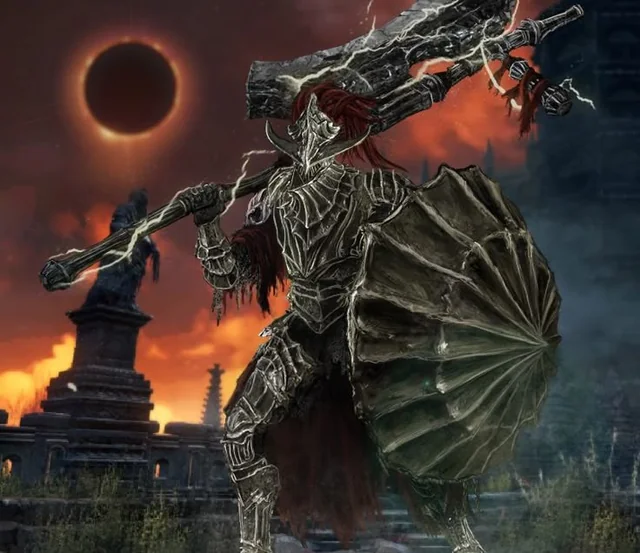
Dragonslayer Armour
O Dragonslayer Armour é um dos combates mais cinematográficos e intensos de Dark Souls III. Lutando sobre uma ponte imensa diante do pôr do sol, o jogador enfrenta uma armadura animada por uma força misteriosa, protegida por estranhas borboletas que flutuam ao redor. É um confronto de pura força e técnica, com uma trilha sonora épica e uma atmosfera solene que prenuncia o fim da jornada em Lothric.
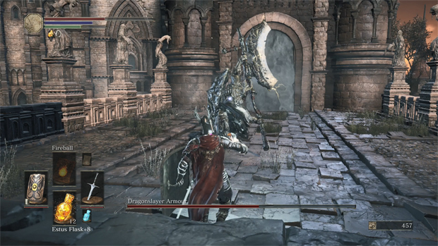
Localização
Encontrado no final de Lothric Castle, logo antes da entrada para o Grand Archives. A luta acontece em uma arena estreita com poucos espaços seguros, o que aumenta a tensão e o risco de ser jogado para fora.
Lore
A armadura pertencia a um antigo matador de dragões, um guerreiro lendário que lutou ao lado de Gwyn e seus cavaleiros. Com o tempo, o espírito do portador se perdeu, e apenas o casco metálico restou — movido agora por vontade alheia, possivelmente pelas borboletas estranhas conhecidas como Pilgrim Butterflies.
A armadura se ergue uma última vez para proteger o caminho até o topo de Lothric, cumprindo um dever esquecido por eras.
Macetes pra vencer
Fique atento aos golpes horizontais e verticais — a força de impacto é alta, mas o tempo de recuperação é generoso.
Armas rápidas e de médio alcance são ideais; evite armas lentas.
Role para o lado esquerdo (seu lado direito) para escapar dos ataques amplos.
Na segunda fase, o chão começa a brilhar com ataques mágicos vindos das borboletas — mantenha-se em movimento constante.
O chefe é vulnerável a ataques de trovão e dano sangrento.
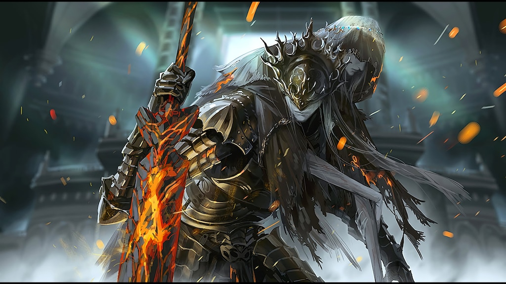
Lorian, Elder Prince & Lothric, Younger Prince
Um dos confrontos mais marcantes de Dark Souls III, o duelo contra Lorian e Lothric é a culminação da jornada pelo castelo de Lothric. Este combate duplo simboliza o fardo e a tragédia dos últimos herdeiros da chama. O cenário dourado e silencioso do salão real contrasta com a violência do duelo — uma luta que representa o declínio da nobreza e o peso do destino.
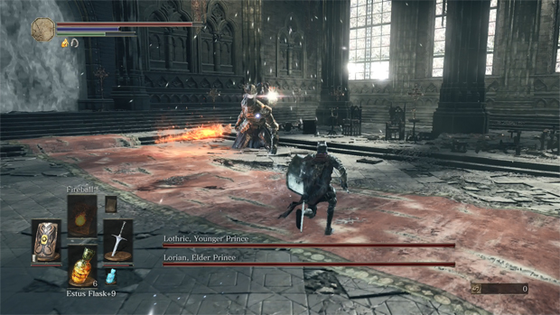
Localização
O encontro acontece no topo de Lothric Castle, após vencer o Dragonslayer Armour e atravessar os Grand Archives. É o último obstáculo antes de acessar o Kiln of the First Flame.
Lore
Lorian era o cavaleiro mais poderoso do reino, conhecido por sua bravura e devoção. Quando seu irmão mais novo, o frágil e doente Lothric, foi escolhido para reacender a chama, Lorian recusou-se a deixá-lo enfrentar o sacrifício sozinho. Ele assumiu a dor e a maldição de Lothric sobre si, tornando-se aleijado e queimado — um símbolo vivo de lealdade e sofrimento.
Lothric, amargurado com o destino imposto pelos deuses, rejeitou a chama e preferiu observar o mundo se apagar. Juntos, os dois se tornaram guardiões da Era das Trevas, unidos até o fim em corpo e alma.
Macetes pra vencer
Primeira fase: Lorian luta sozinho, teleportando-se pelo campo e desferindo ataques de espada incandescente. Observe o brilho antes do teleporte para prever sua aparição.
Rolagens curtas e temporizadas são a chave — role para o lado do braço da espada no momento do impacto.
Priorize Lothric na segunda fase — ele é o elo que mantém a dupla viva. Ataques com área ampla podem atingir ambos.
Armas com dano mágico são menos eficazes; opte por dano físico ou elétrico.
Espere uma luta longa e intensa — ritmo e paciência são essenciais.
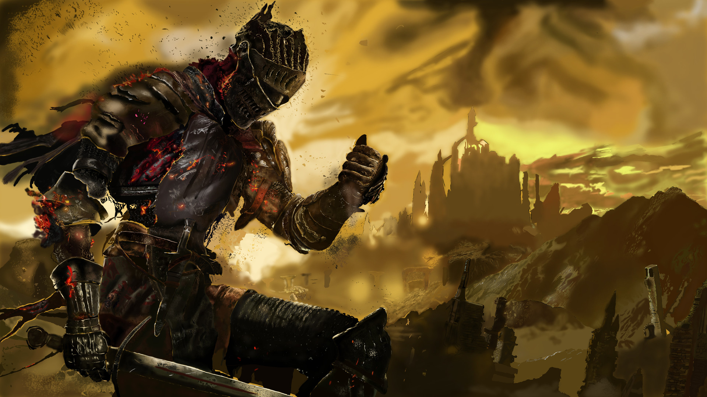
Soul of Cinder
O Soul of Cinder representa o clímax absoluto de Dark Souls III — o fim e o recomeço do ciclo da chama. Ele é a manifestação viva de todos os Lordes das Cinzas que já sacrificaram suas almas para manter o fogo aceso. Este não é apenas um inimigo: é a própria essência da história de Dark Souls, o legado dos que vieram antes, agora de pé contra você no crepúsculo da Era do Fogo.
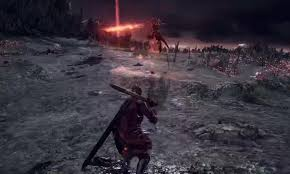
Localização
O confronto acontece no Kiln of the First Flame, um campo estéril e silencioso, coberto por cinzas e brisa quente. O jogador chega ali após derrotar todos os Lordes e oferecer seus tronos, encerrando o ciclo e encarando o destino do mundo.
Lore
O Soul of Cinder é a soma das vontades daqueles que acenderam a chama ao longo das eras — de Gwyn, o primeiro Lorde das Cinzas, até cada herói que seguiu o mesmo caminho. Ele não é uma entidade única, mas um amálgama de almas antigas que se fundiram no dever eterno de proteger o fogo.
Em sua forma final, ele reflete Gwyn — com ataques e gestos idênticos, como uma lembrança melancólica do deus que iniciou tudo. A luta simboliza o fim do ciclo: o jogador enfrenta a própria história do mundo que tenta salvar.
Macetes pra vencer
Primeira fase: O Soul of Cinder alterna entre estilos de combate — espada, magia, lança e piromancia. Observe o padrão antes de atacar, pois cada forma tem tempos de recuperação distintos.
Durante a fase da espada, use rolamentos curtos e mantenha-se próximo; já contra magia e lança, mantenha distância e ataque após os combos longos.
Segunda fase: Quando o tema de Gwyn – Lord of Cinder começar a tocar, prepare-se. Ele empunhará uma espada flamejante e alternará entre ataques rápidos e agarrões devastadores.
]Ataques elétricos e golpes de fogo devem ser evitados com rolamentos diagonais — nunca laterais.
Utilize armas com dano físico puro e mantenha a calma. Esta batalha é mais sobre resistência e atenção do que força bruta.
CHEFES DE DARK SOULS 3 (OPCIONAIS)
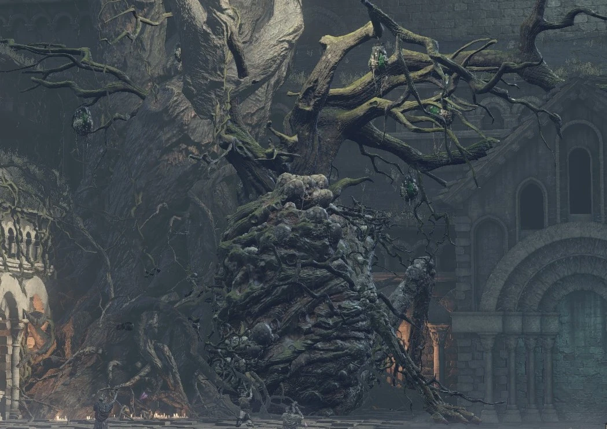
Curse-rotted Greatwood
O Curse-rotted Greatwood é um boss secundário gigantesco localizado no Undead Settlement. Esta árvore corrompida está impregnada de maldição e devora qualquer criatura que se aproxime. Apesar de opcional, é uma das primeiras lutas desafiadoras que testam a mobilidade e a estratégia do jogador.
Localização
Encontrado no Undead Settlement, o caminho até ele passa por uma praça central infestada de inimigos. A árvore bloqueia o caminho principal, e os aventureiros devem limpar a área antes de entrar na arena.
Lore
A Curse-rotted Greatwood nasceu da corrupção que assola Lothric. Suas raízes e galhos absorvem a maldição que percorre a região, transformando vítimas em parte de sua própria forma monstruosa. Alguns moradores acreditam que ela simboliza a decadência do reino e o ciclo interminável de morte e corrupção.
Macetes pra vencer
Concentre ataques nos ovos presos à barriga, pois causarão grande dano e podem interromper ataques.
Mantenha distância e rodeie o boss, explorando a lentidão de seus movimentos.
Aproveite para atacar logo após ataques pesados, quando há abertura.
Use o ambiente da arena para se proteger ou ganhar vantagem.
Invocações e magias de longo alcance podem facilitar o combate para quem tem menos mobilidade.
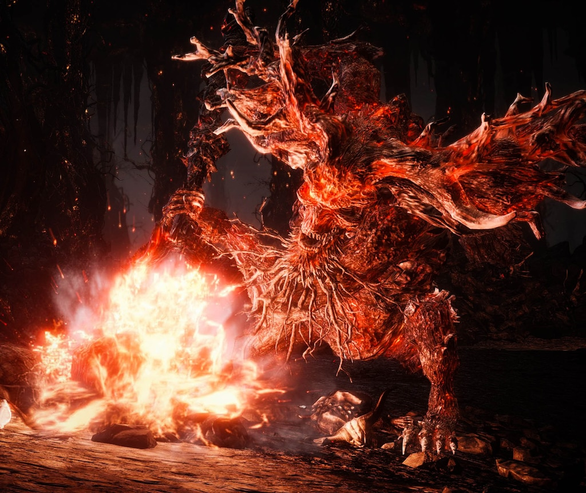
Old Demon King
O Old Demon King é um boss secundário localizado nas profundezas da Smouldering Lake. Ele é um dos últimos demônios sobreviventes, um vestígio de uma era já esquecida. Seu corpo está em ruínas, suas chamas quase extintas, mas sua fúria permanece viva — e devastadora. A batalha contra ele é um confronto simbólico entre o passado flamejante de Izalith e o presente sombrio de Lothric.
Localização
O Old Demon King repousa nas ruínas do Smouldering Lake, uma área acessada ao destruir a ponte de madeira logo antes do encontro com High Lord Wolnir em Catacombs of Carthus. Ao derrubar a ponte e descer pelas raízes, o jogador encontrará um vasto lago de cinzas e lava, guardado por demônios e armadilhas. O caminho até ele é traiçoeiro, repleto de inimigos e magias flamejantes.
Lore
O Old Demon King é o eco final da linhagem demoníaca originada do Chaos Flame, criada pela bruxa de Izalith. Ele sobreviveu muito além do tempo de seus semelhantes, queimando em uma chama fraca e moribunda. Durante o combate, suas forças diminuem visivelmente, simbolizando o fim da era dos demônios. A sua queda representa o último suspiro do poder do Caos — um ser que lutou até o fim por um fogo que já não existe.
Macetes pra vencer
O boss é resistente a fogo, portanto ataques de fogo ou piromancia são praticamente inúteis.
Magias, relâmpagos e armas físicas causam mais dano.
Mantenha-se perto de suas pernas para evitar a maioria das magias em área.
Cuidado com o ataque de explosão massiva quando ele cai de joelhos — é um golpe de despedida com dano em área muito alto.
É possível invocar Tsorig, o Cavaleiro da Armadura Negra, como aliado na luta se você o encontrar antes da arena.
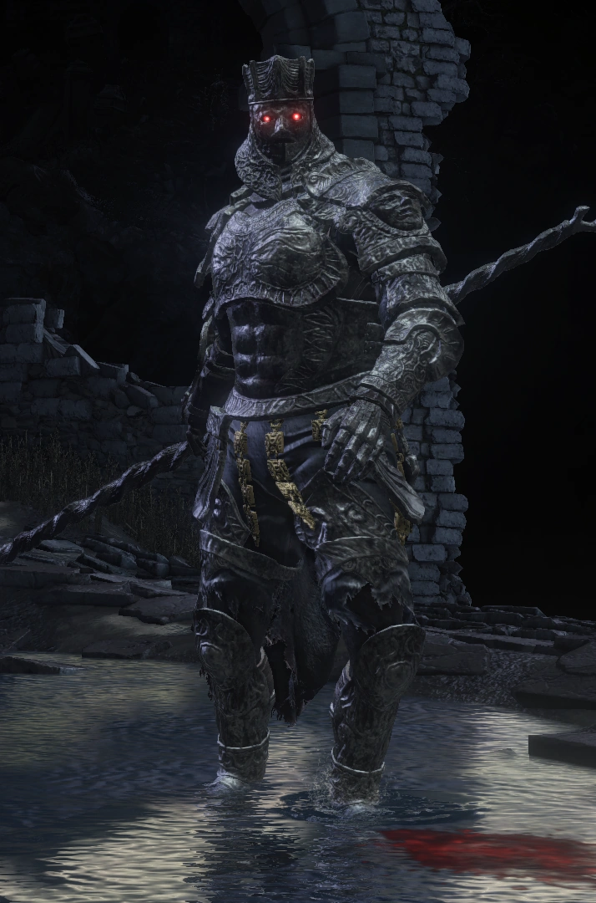
Champion Gundyr
O Champion Gundyr é uma versão alternativa e muito mais poderosa do primeiro boss do jogo, Iudex Gundyr. Ele aguarda o jogador nas ruínas do Untended Graves, uma realidade espelhada e sombria do Cemitério das Cinzas. Essa luta representa um retorno simbólico ao início da jornada — só que agora, o jogador enfrenta aquilo que um dia o testou, em sua forma plena e implacável.
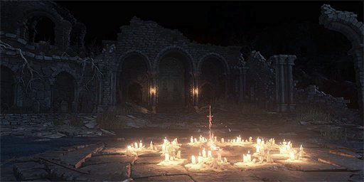
Localização
O Champion Gundyr é encontrado no Untended Graves, área secreta acessada logo após derrotar Oceiros, o Rei Consumido. Após a batalha, siga pela passagem oculta atrás da arena dele e atravesse o túnel escuro. No fim, uma brisa fria e o som distante do fogo te levam até o cemitério esquecido — onde Gundyr te espera, pronto para um duelo sem piedade.
Lore
Antes de se tornar um campeão amaldiçoado, Gundyr era um guerreiro destinado a ser o “Juiz das Cinzas”, encarregado de receber o verdadeiro herói das chamas. Mas ele chegou tarde demais — o fogo já havia se apagado, e sua missão foi perdida para sempre. Preso na escuridão, Gundyr foi consumido pela fúria e pela vergonha, tornando-se o Champion Gundyr, condenado a lutar eternamente contra qualquer um que ousasse cruzar seu caminho.
Macetes pra vencer
Evite lutar de frente: os ataques de investida de Gundyr são rápidos e poderosos. Tente manter-se ao lado dele.
Use parry e backstab: ele é vulnerável a ambos, mas exige precisão.
Cuidado com o chutaço: o golpe de chute quebra defesa facilmente — mantenha distância quando ele começar a avançar.
Segunda fase: ao perder metade da vida, Gundyr entra em fúria — ataques se tornam quase incessantes. Use o terreno e os momentos de recuperação para punir.
invocar ajuda: possível trazer Sword Master (NPC) para distraí-lo, caso prefira não enfrentar sozinho.
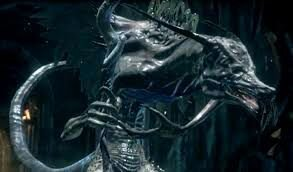
Oceiros, o Rei Consumido
O Oceiros, o Rei Consumido é um boss secundário encontrado nas profundezas do Consumed King’s Garden, uma área tomada pela decadência e pela loucura. Antigo rei de Lothric, Oceiros foi outrora um homem nobre e sábio, mas acabou perdendo tudo ao se entregar à obsessão pelo poder e pela luz dos dragões. Quando o jogador o encontra, ele já está completamente corrompido, segurando um bebê invisível nos braços e balbuciando insanidades enquanto ataca com ferocidade cega.
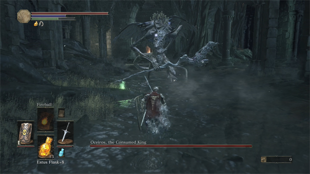
Localização
O Oceiros é encontrado no Consumed King’s Garden, acessível após derrotar a Dancer of the Boreal Valley. Ao ativar o mecanismo atrás da arena da Dancer, uma escada se revelará, conduzindo a uma passagem escura e venenosa. Avance pelo jardim tomado por cavaleiros corrompidos e criaturas decrépitas até chegar à câmara do rei. Lá, cercado por ecos e murmúrios, Oceiros aguarda seu visitante.
Lore
Oceiros foi o antigo rei de Lothric e marido da rainha Gwynevere. Obcecado pela ideia de transcendência, ele tentou imitar os dragões, acreditando que isso o tornaria imortal e divino. Em sua busca, descobriu o poder da Moonlight e mergulhou nas artes proibidas, perdendo a razão e a humanidade. Ele fala incessantemente sobre seu filho Ocelotte, um bebê que segura e tenta proteger — mas o bebê nunca é visto. Muitos acreditam que Oceiros o perdeu há muito tempo, e o que resta é apenas delírio. Sua transformação grotesca simboliza o preço da busca pela luz eterna.
Macetes pra vencer
A luta tem duas fases: na primeira, Oceiros é mais contido, utilizando golpes com o cetro e magias de cristal.
fique sob seu corpo, entre as pernas — a maioria dos golpes passará por cima.
Evite ficar longe, pois ele usa magias de longo alcance devastadoras.
Ele é vulnerável a sangramento e fogo, então armas com esses atributos facilitam o combate.
escudos resistentes a magia são úteis na primeira fase.
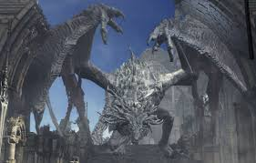
Ancient Wyvern
O Ancient Wyvern é um dos bosses mais peculiares de Dark Souls III. Encontrado no misterioso Archdragon Peak, ele é um dragão colossal que representa a antiga linhagem dracônica que antecede os próprios deuses. Ao contrário da maioria dos confrontos, essa batalha não é vencida pela força bruta, mas pela inteligência e exploração do ambiente — um verdadeiro teste de percepção e estratégia.
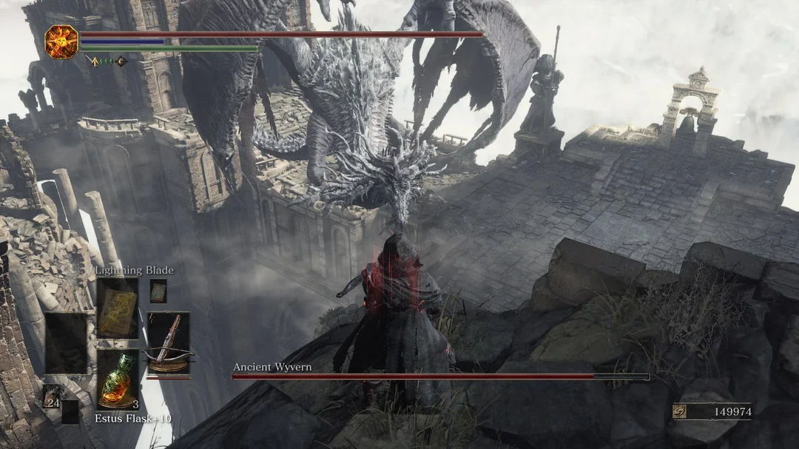
Localização
O Ancient Wyvern habita o topo do Archdragon Peak, uma área secreta acessada usando o gesto “Path of the Dragon” na prisão de Irithyll Dungeon. Após usar o gesto no local correto, o jogador é transportado para um mundo banhado pela luz dourada e pelas brumas eternas das montanhas dos dragões. A caminhada até o Wyvern é repleta de inimigos poderosos, monges dracônicos e guerreiros que cultuam a transcendência dracônica.
Lore
O Ancient Wyvern é um dos últimos remanescentes das antigas criaturas dracônicas que dominaram o mundo antes da Era do Fogo. Diferente dos dragões verdadeiros, os wyverns são uma forma degenerada — descendentes imperfeitos que herdaram apenas parte do poder ancestral. Este dragão, em particular, é venerado pelos monges do pico como uma entidade divina, símbolo de pureza e iluminação. Sua presença no topo da montanha representa a meta final dos cultistas: alcançar a forma de dragão através da fé e do sacrifício.
Macetes pra vencer
A luta não deve ser travada diretamente — tentar enfrentá-lo de frente é suicídio.
Corra pelo campo de batalha eliminando inimigos menores até encontrar o caminho que leva a uma plataforma elevada.
Do ponto mais alto, é possível realizar um plunge attack (ataque mergulhante) na cabeça do Wyvern, matando-o instantaneamente.
Magias e flechas são inúteis — o ponto fraco real é o golpe aéreo final.
Mantenha-se atento às lanças de fogo e aos monges — eles servem apenas para atrasar o jogador.
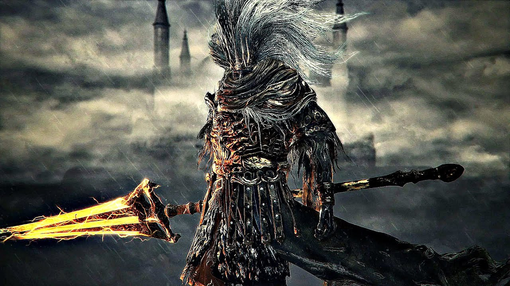
Nameless King
O Nameless King é, sem dúvida, um dos chefes mais icônicos e desafiadores de Dark Souls III. Guerreiro divino que abdicou de seu título e rompeu com os deuses, ele é conhecido como o Senhor das Tempestades — um ser que domina os céus e cavalga um dragão elétrico em um campo de batalha envolto em nuvens eternas. O encontro com ele é uma das experiências mais grandiosas e cinematográficas de toda a franquia.
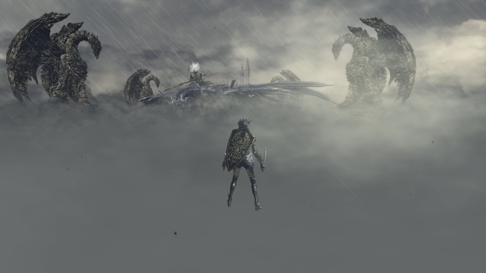
Localização
O Nameless King habita o topo do Archdragon Peak, área secreta acessível após derrotar o Ancient Wyvern. Siga pela ponte e suba a longa escadaria cercada por ventos dourados e relâmpagos distantes. Ao final, uma imensidão branca toma conta do céu — e o rugido de um dragão anuncia o início da luta.
Lore
O Nameless King era um dos filhos de Gwyn, o Senhor da Luz Solar. Ele liderou os exércitos divinos durante a guerra contra os dragões antigos, mas eventualmente traiu os deuses e se aliou às próprias criaturas que jurou destruir. Renunciando ao seu nome e à sua divindade, foi apagado da história como um traidor.
Agora, ele reina solitário sobre as nuvens, acompanhado apenas por seu fiel dragão, o King of the Storm, e pelos ecos de uma era perdida. Sua luta é tanto física quanto simbólica: um confronto entre o orgulho dos deuses e a transcendência daqueles que desafiaram o próprio fogo.
Macetes pra vencer
Armas de relâmpago são inúteis, já que ele tem resistência altíssima. Prefira fogo ou dano físico bruto.
Role lateralmente, nunca para trás — seus golpes têm tracking agressivo.
Observe o som dos trovões: ele sempre precede ataques de longo alcance.
Um escudo com alta resistência elétrica ajuda, mas o ideal é dominar a leitura dos tempos de ataque.
A vitória sobre o Nameless King concede a Soul of the Nameless King e o reconhecimento simbólico de um dos guerreiros mais poderosos da história de Lothric.